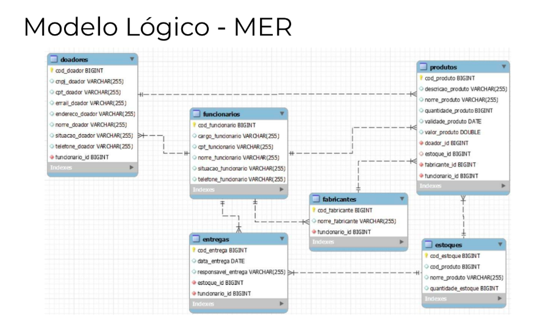

O que é um banco de dados
Um banco de dados é um sistema usado para armazenar, organizar e gerenciar informações de forma estruturada, permitindo acesso, manipulação e recuperação eficientes desses dados. Ele é essencial em diversos contextos, como sistemas de sites, aplicativos, empresas e muito mais, pois ajuda a lidar com grandes volumes de informações de maneira prática e segura.
banco de dados não relacional
Um banco de dados não relacional é um banco de dados que não usa o esquema de tabela de linhas e colunas encontrado na maioria dos sistemas de banco de dados tradicionais
o que é um diagrama condeitual DER
O Diagrama Conceitual DER (Diagrama de Entidade-Relacionamento) é uma representação gráfica que descreve a estrutura lógica de um banco de dados. Ele destaca os elementos principais de um sistema (entidades, atributos e relacionamentos) e como eles se conectam. É usado na etapa de modelagem de dados para planejar a organização das informações antes de implementá-las em um banco de dados.

o que é um diagrama lógico MER
Um Diagrama Lógico MER (Modelo Entidade-Relacionamento) é uma representação detalhada e refinada da estrutura de um banco de dados, que evolui a partir do modelo conceitual (como o DER). Ele é usado para descrever, de forma lógica, como os dados serão organizados, estruturados e implementados em um Sistema de Gerenciamento de Banco de Dados (SGBD).
O que é dicionário de dados
Um dicionário de dados é uma documentação que descreve, de forma detalhada, todas as informações sobre os dados armazenados em um sistema ou banco de dados. Ele serve como um guia para desenvolvedores, analistas e administradores, ajudando a entender a estrutura, os tipos, as relações e as restrições dos dados.